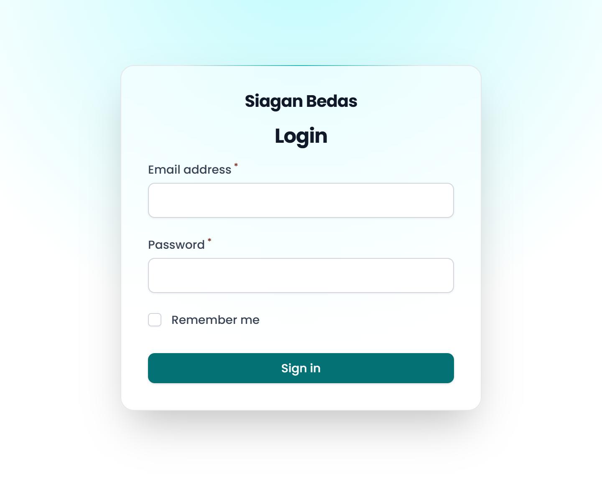
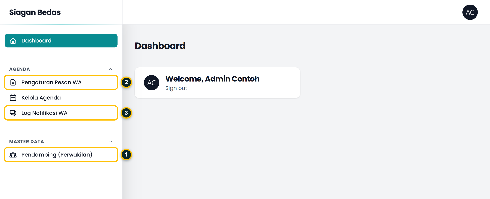
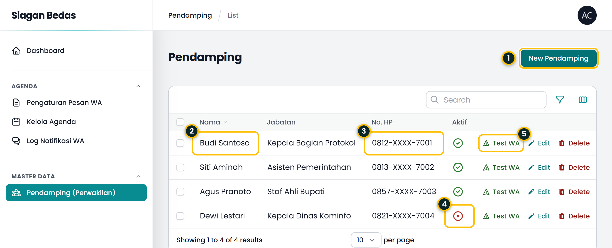
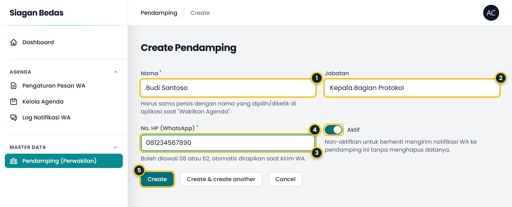
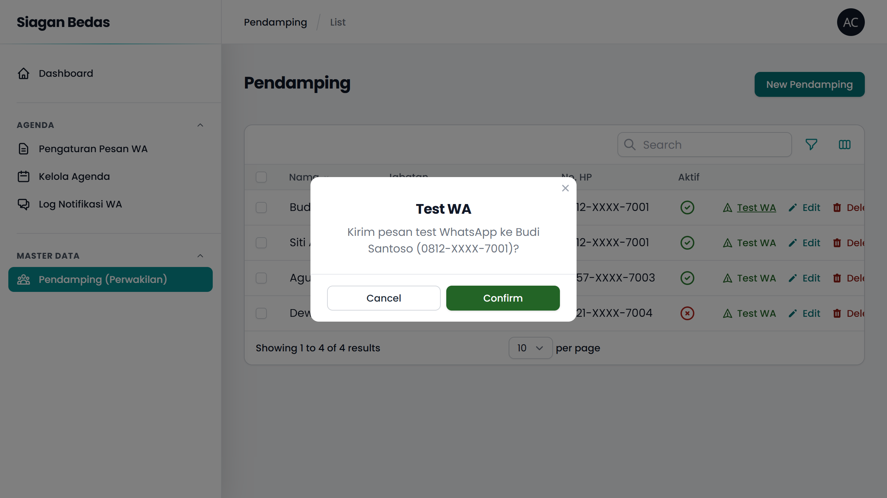
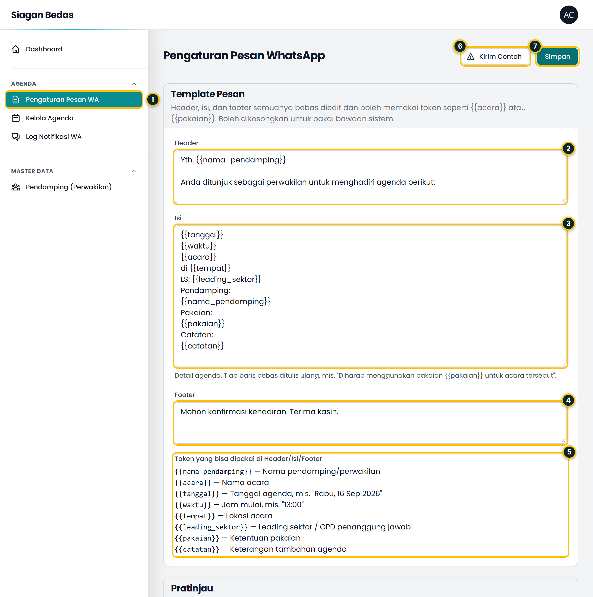
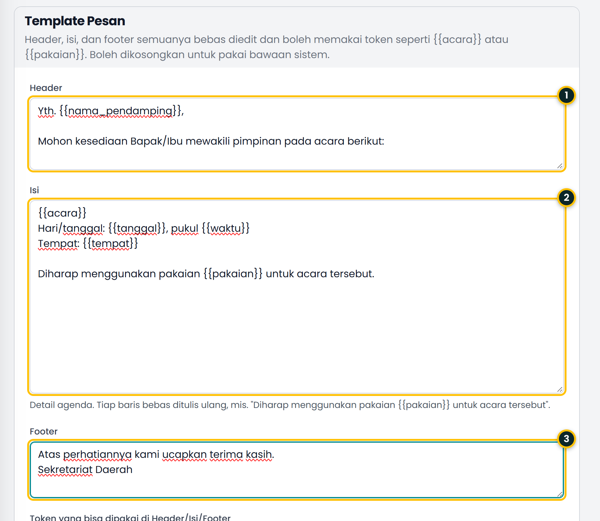
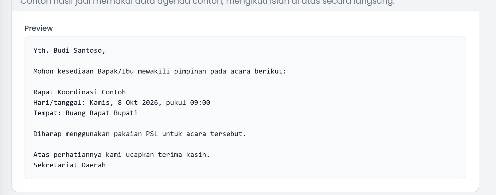
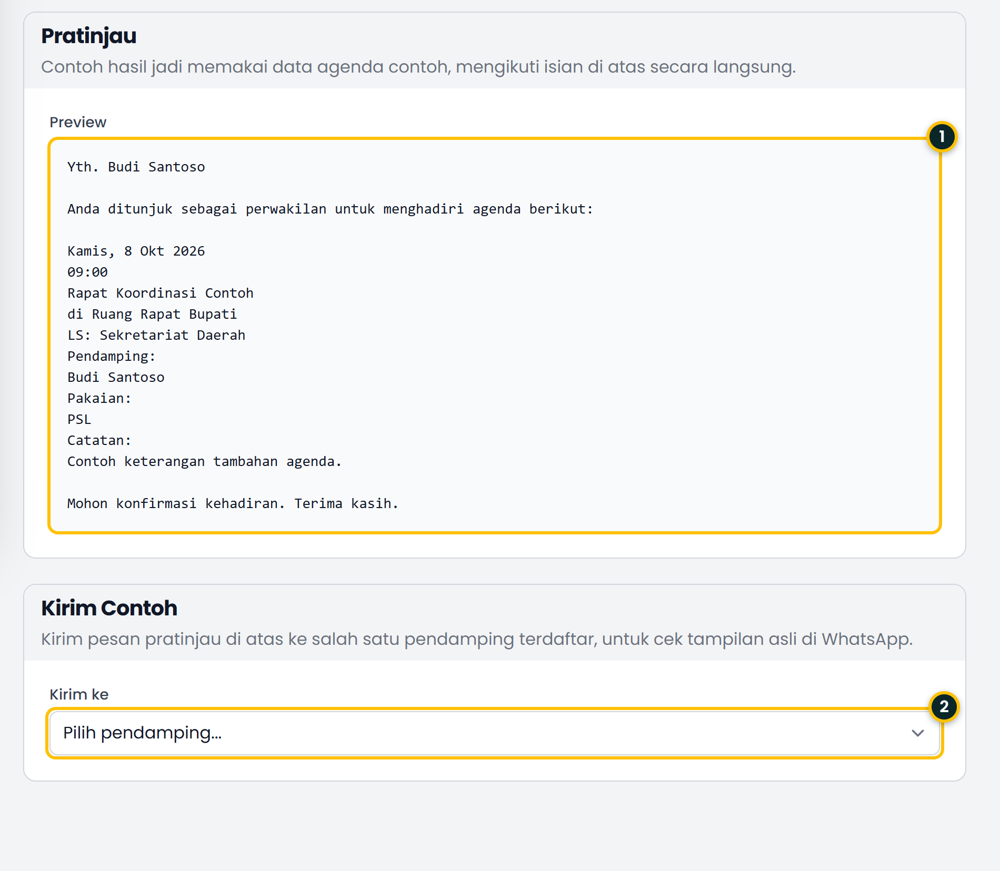
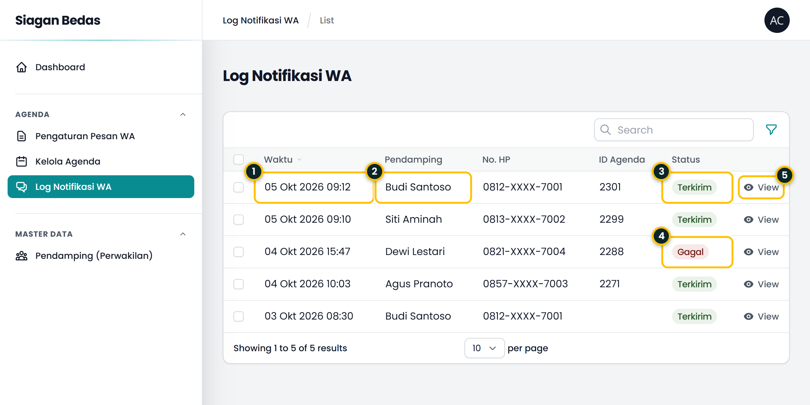

Bagian 1
Alur singkat
Semuanya berjalan otomatis setelah ajudan menekan Wakilkan. Admin cukup memastikan data perwakilan dan isi pesan sudah benar.
- 1AplikasiAjudan menekan WakilkanMemilih nama perwakilan dari daftar, lalu mengonfirmasi.
- 2SistemNama dicocokkanDicari di Master Pendamping. Harus aktif dan punya nomor HP.
- 3TemplatePesan dirakitHeader, isi, dan footer digabung dengan data agenda.
- 4WhatsAppPesan dikirimMasuk ke nomor perwakilan lewat layanan Fonnte.
- 5LogHasil dicatatTampil sebagai Terkirim atau Gagal di Log Notifikasi WA.
Aman untuk aplikasi lama. Versi aplikasi yang belum diperbarui tetap berjalan normal. Hanya saja, versi lama tidak mengirim nama perwakilan sehingga tidak memicu pesan WhatsApp.
Bagian 2 · Dikerjakan admin
Siapkan data perwakilan
Daftar perwakilan disimpan sekali di admin panel. Nama di daftar ini yang dicocokkan dengan nama yang dipilih ajudan di aplikasi.
Masuk ke admin panel
Buka alamat admin panel (akhiran /admin) lalu masuk dengan email dan kata sandi akun admin.

Kenali menu

- 1Pendamping (Perwakilan), tempat mengelola daftar nama dan nomor WhatsApp.
- 2Pengaturan Pesan WA, tempat mengubah isi pesan.
- 3Log Notifikasi WA, riwayat semua pesan yang dikirim sistem.
Daftar perwakilan

- 1New Pendamping membuka formulir untuk menambah perwakilan baru.
- 2Nama harus sama dengan nama yang dipilih ajudan di aplikasi. Huruf besar dan kecil tidak dibedakan.
- 3No. HP boleh diawali 08 atau 62, sistem merapikannya saat mengirim.
- 4Aktif. Ikon silang merah berarti nonaktif, perwakilan itu tidak akan menerima pesan namun datanya tetap tersimpan.
- 5Test WA mengirim pesan uji ke nomor di baris tersebut.
Tambah atau ubah perwakilan

- 1Nama (wajib). Tulis persis seperti yang akan dipilih di aplikasi.
- 2Jabatan (opsional), membantu membedakan nama yang mirip.
- 3No. HP (WhatsApp) (wajib). Pastikan nomornya aktif dan terdaftar di WhatsApp.
- 4Aktif. Matikan untuk berhenti mengirim pesan tanpa menghapus data.
- 5Create menyimpan perwakilan baru.
Uji nomor dengan Test WA
Sebelum dipakai sungguhan, pastikan nomor benar-benar menerima pesan. Tekan Test WA pada baris perwakilan, lalu periksa nama dan nomor pada jendela konfirmasi.

Perhatian. Confirm mengirim pesan WhatsApp sungguhan ke nomor tersebut dan memakai kuota layanan. Gunakan seperlunya.
Bagian 3 · Dikerjakan ajudan
Mewakilkan agenda di aplikasi
Cukup empat langkah. Pilih nama dari daftar supaya penulisannya sama persis dengan data di admin panel.
Wakilkan Agenda
Mohon masukan perwakilan
Tampilan aplikasi dan WhatsApp pada bagian ini adalah mockup ilustrasi, bukan tangkapan layar.
Hal yang perlu diperhatikan
- Pilih nama dari daftar bila tersedia. Kolom isian manual hanya untuk perwakilan yang belum terdaftar.
- Nama yang diketik manual tetap tersimpan pada status agenda, tetapi pesan WhatsApp hanya terkirim bila nama tersebut ada di Master Pendamping dan berstatus aktif.
- Hanya aksi Wakilkan yang mengirim pesan. Aksi lain seperti Hadiri, Edit, atau Hapus tidak mengirim apa pun.
Bagian 4 · Dikerjakan admin
Atur isi pesan
Isi pesan tidak lagi baku. Admin bisa menulis ulang header, isi, dan footer, serta menyisipkan data agenda memakai token seperti {{acara}} atau {{pakaian}}.
Pesan terdiri dari tiga bagian
Bagian yang dikosongkan otomatis kembali ke teks bawaan sistem, jadi pesan tidak akan pernah kosong.
Halaman Pengaturan Pesan WA

- 1Buka dari menu Pengaturan Pesan WA.
- 2Header, kalimat pembuka. Cocok untuk salam dan tujuan pesan.
- 3Isi, detail agenda. Setiap baris bebas ditulis ulang, ditambah, atau dihapus.
- 4Footer, kalimat penutup.
- 5Daftar token yang bisa disisipkan di ketiga kolom.
- 6Kirim Contoh mengirim pratinjau ke satu perwakilan untuk dicek di WhatsApp.
- 7Simpan menerapkan perubahan untuk semua pesan berikutnya.
Token yang tersedia
Tulis token persis seperti di tabel, lengkap dengan kurung kurawal ganda. Saat pesan dikirim, token diganti dengan data agenda yang sebenarnya.
| Token | Diganti dengan | Contoh hasil |
|---|---|---|
{{nama_pendamping}} | Nama perwakilan penerima pesan | Budi Santoso |
{{acara}} | Nama acara | Rapat Koordinasi Contoh |
{{tanggal}} | Hari dan tanggal agenda | Kamis, 8 Okt 2026 |
{{waktu}} | Jam mulai | 09:00 |
{{tempat}} | Lokasi acara | Ruang Rapat Bupati |
{{leading_sektor}} | Leading sektor atau OPD penanggung jawab | Sekretariat Daerah |
{{pakaian}} | Ketentuan pakaian | PSL |
{{catatan}} | Keterangan tambahan agenda | Contoh keterangan tambahan agenda. |
Data yang kosong. Jika sebuah agenda tidak punya data untuk token tertentu, misalnya pakaian belum diisi, token itu diganti dengan tanda -. Kalau tidak ingin baris itu muncul, hapus barisnya dari template.
Contoh kustomisasi
Setiap baris pada kolom Isi bebas ditulis dengan gaya sendiri. Dua contoh untuk token pakaian:
Pakaian: {{pakaian}}
Pakaian: PSL
Diharap menggunakan pakaian {{pakaian}} untuk acara tersebut.
Diharap menggunakan pakaian PSL untuk acara tersebut.
Berikut contoh template yang ditulis ulang seluruhnya, beserta hasil pratinjaunya.


Pratinjau dan Kirim Contoh

- 1Pratinjau menampilkan pesan lengkap memakai data agenda contoh, tanpa perlu menyimpan.
- 2Kirim ke, pilih perwakilan aktif yang akan menerima pesan contoh, lalu tekan Kirim Contoh di kanan atas.
- Urutan kerja yang disarankan: ubah isian, cek pratinjau, kirim contoh ke nomor sendiri bila perlu, lalu Simpan.
- Perubahan baru dipakai untuk pesan sungguhan setelah Simpan ditekan.
- Kirim Contoh mengirim WhatsApp sungguhan dan tercatat di Log Notifikasi WA.
Bagian 5
Pantau pengiriman
Setiap percobaan kirim, baik dari aksi Wakilkan maupun dari tombol Test WA dan Kirim Contoh, tercatat di Log Notifikasi WA.

- 1Waktu percobaan kirim, terbaru di paling atas.
- 2Pendamping penerima pesan.
- 3Terkirim berarti layanan WhatsApp menerima pesan untuk dikirim.
- 4Gagal berarti pesan ditolak atau tidak bisa diproses. Buka detailnya untuk melihat alasannya.
- 5View menampilkan isi pesan lengkap dan balasan dari layanan pengirim.
Catatan. Status Terkirim menandakan pesan sudah diserahkan ke layanan WhatsApp, bukan jaminan bahwa penerima sudah membacanya. Kolom ID Agenda kosong untuk pesan uji.
Bagian 6
Jika pesan tidak terkirim
Periksa gejala berikut dari atas ke bawah.
| Gejala | Penyebab yang umum | Yang perlu dilakukan |
|---|---|---|
| Tidak ada baris baru di Log Notifikasi WA | Nama dari aplikasi tidak cocok dengan Master Pendamping, perwakilan nonaktif, nomor HP kosong, atau aplikasi masih versi lama. | Cek ejaan nama, pastikan status Aktif dan nomor terisi. Minta ajudan memakai aplikasi versi terbaru. |
| Status Gagal, keterangan nomor tidak valid | Nomor HP salah atau mengandung huruf. | Perbaiki nomor di Master Pendamping, lalu uji dengan Test WA. |
| Status Gagal, ditolak layanan pengirim | Perangkat WhatsApp pada layanan Fonnte terputus, kuota habis, atau token tidak berlaku. | Periksa status perangkat dan kuota di dashboard Fonnte. Bila token berganti, minta admin teknis memperbaruinya di pengaturan server. |
Pesan terkirim tetapi tertulis {{...}} apa adanya | Penulisan token keliru. | Cocokkan dengan daftar token pada Bagian 4. Pastikan memakai kurung kurawal ganda dan huruf kecil. |
| Beberapa baris pesan berisi tanda "-" | Data agenda untuk token itu belum diisi. | Lengkapi data agenda, atau hapus baris tersebut dari template. |